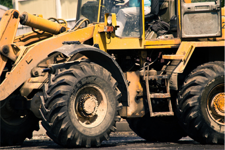
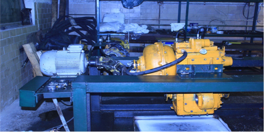

Сервисное-техническое обслуживание
При эксплуатации техники любого производителя рано или поздно возникает необходимость в проведении технического обслуживания, диагностики, текущего и капитального ремонта.
Практика свидетельствует, что качественный сервис техники - непременное условие ее длительной и безотказной работы.
Одной из ключевых задач ТОО «Амкодор-Астана» является сервисная поддержка проданной компанией техники производства ОАО «Амкодор», куда входят полный цикл работ по гарантийному обслуживанию техники, а также техническое обслуживание и ремонт техники в послегарантийный период.
Мы умеем обеспечивать безотказную работу всего модельного ряда техники, производимого ОАО "АМКОДОР" и готовы предоставить ее полное техническое сопровождение в течение всего периода эксплуатации.
Сервисная служба ТОО «Амкодор-Астана» выполняет:
- Гарантийное обслуживание:
- Диагностика неполадок;
- Ремонт, плановое техническое обслуживание и консультации.
- Сервисное обслуживание – плановое техническое обслуживание техники согласно графика ТО с выездом к клиенту. Все виды работ по техническому обслуживанию погрузчиков проводят мобильные группы сервисной службы, укомплектованные всем необходимым оборудованием и квалифицированным персоналом. 
- Диагностика технического состояния с выездом к клиенту — выявление неисправностей и оценка износа деталей, узлов и механизмов. В результате осмотра составляется акт технического состояния. Стоимость услуги от 5000 до 10000 тг.
- Ремонт техники с выездом к клиенту (малый и средний ремонт или замена узлов). Ремонт с выездом наших специалистов на место эксплуатации наиболее эффективен в тех случаях, когда клиенту своими силами или силами местных сервисных служб отремонтировать технику не удается.
Стоимость услуг включает в себя:
- Командировочные расходы (проезд, проживание, суточные);
- Работа по выявлению неисправности (дефектация);
- Устранение неисправности – зависит от объема работ и стоимости запчастей.
- Текущий ремонт - проводится в период эксплуатации техники для обеспечения её работоспособного состояния при минимальных простоях. Потребность в проведении текущего ремонта устанавливается при диагностике технического состояния и предусматривает замену или восстановление неисправных узлов и деталей.
- Капитальный ремонт проводится с полной разборкой техники для восстановления работоспособного состояния. Капитальный ремонт проводится в условиях сервисного центра.
Капитальный ремонт предусматривает:
- Полную разборку и дефектацию;
- Восстановление узлов и агрегатов;
- Замену изношенных узлов и агрегатов на новые;
- Ремонт или замену (при необходимости) двигателя;
- Замену или ремонт гидрооборудования, регулировки и проведения испытаний;
- Замену рукавов высокого давления;
- Замену крепежных элементов.
На проведенный ремонт техники предоставляется гарантия 6 (шесть) месяцев.
Для этого у нас есть все необходимое:
- Сервисный центр удобно расположен по адресу: г. Астана ш. Алаш, д.29 Сервисный центр имеет сертификат соответствия, · Все виды ремонта производятся в строгом соответствии с техническими инструкциями завода-изготовителя и применением оригинальных запасных частей и расходных материалов, рекомендованных к применению ОАО «Амкодор».
- Мы имеем высококвалифицированный персонал, прошедший обучение и аттестацию на ОАО «Амкодор», что позволяет производить любой по сложности ремонт техники производства ОАО «Амкодор».
- Многолетний опыт ремонта, наличие ремонтной зоны и склада запасных частей, прямые контакты с заводом-изготовителем и поставщиками обеспечивающие минимальные сроки поставки запчастей позволяют производить ремонт любой сложности.
Зона обслуживания сервиса охватывает весь г. Астана и Акмолинскую обл., а также при необходимости можем выехать в другие регионы Республики Казахстан.
Вызов бригады принимается согласно письменной заявке, отправленной посредством факсимильной связи или электронной почты.
Клиенты в любой момент могут получить квалифицированную консультацию наших специалистов. В процессе телефонного общения, как правило, принимается наиболее оптимальное решение по каждой конкретной ситуации.
Вы всегда можете заключить с нами договор на техническое обслуживание и ремонт приобретенной Вами техники производства ОАО «Амкодор».
Сервисный центр: г. Астана ш.Алаша 29.
E-mail: amkodor-astana.service@mail.ru
Контактные телефоны
Механик Мастанов Юрий +7 (7172)999-235
+7 7718040068